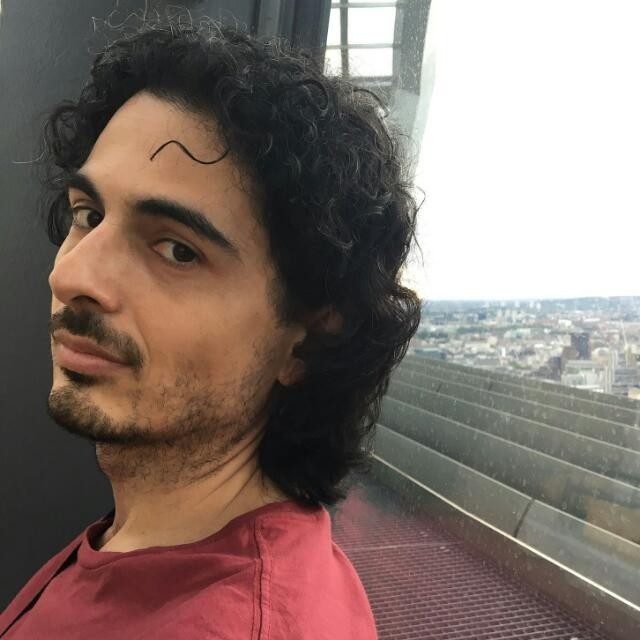
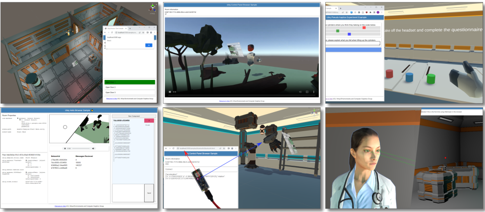
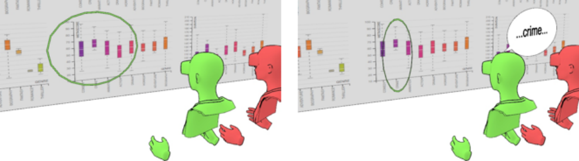
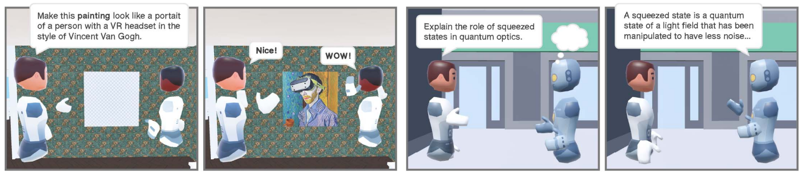
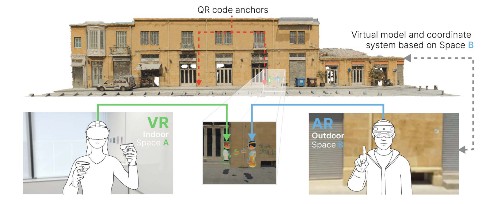
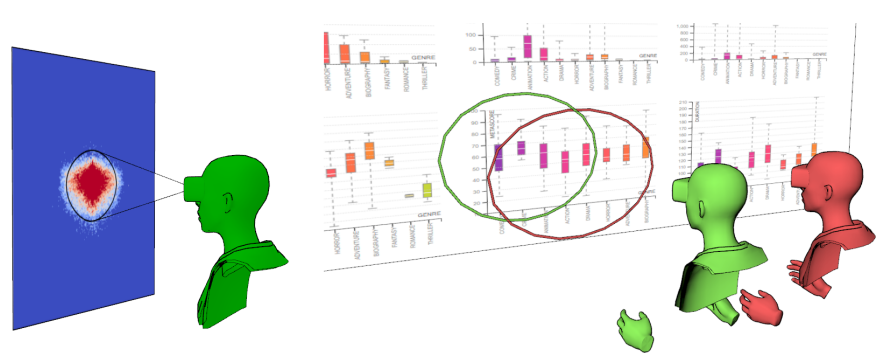
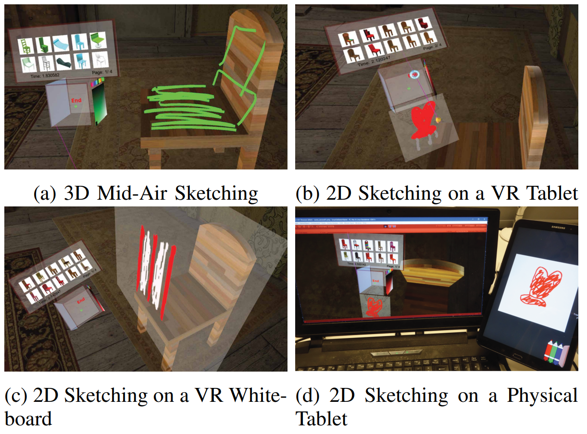
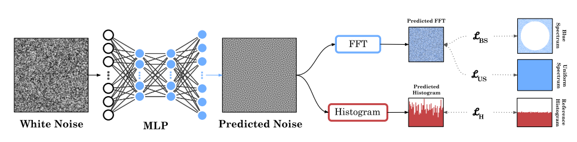
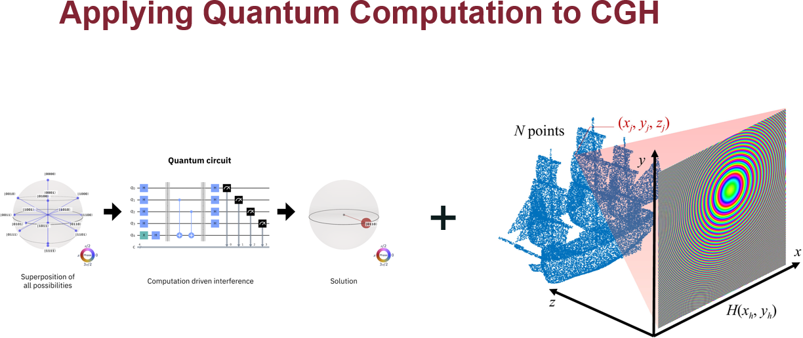

|
 |
Daniele Giunchi |


Publications
|  |
Extending the Open Source Social Virtual Reality Ecosystem to the Browser in Ubiq Sebastian Friston, Ben Congdon, Nels Numan, Klara Brandstätter, Lisa Izzouzi, Felix Thiel, Jingyi Zhang, Daniele Giunchi, David Swapp, Anthony Steed Proceedings of the 28th International ACM Conference on 3D Web Technology (2023) Keywords: |
|  |
Speech-Augmented Cone-of-Vision for Exploratory Data Analysis Riccardo Bovo, Daniele Giunchi, Ludwig Sidenmark, Joshua Newn, Hans Gellersen, Enrico Costanza, Thomas Heinis CHI'23 Keywords: |
|  |
Ubiq-Genie: Leveraging External Frameworks for Enhanced Social VR Experiences Nels Numan, Daniele Giunchi, Benjamin Congdon, Anthony Steed 2023 IEEE Conference on Virtual Reality and 3D User Interfaces Abstracts and Workshops (VRW) Keywords: |
|  |
Towards Outdoor Collaborative Mixed Reality: Lessons Learnt from a Prototype System Nels Numan, Ziwen Lu, Benjamin Congdon, Daniele Giunchi, Alexandros Rotsidis, Andreas Lernis, Kyriakos Larmos, Tereza Kourra, Panayiotis Charalambous, Yiorgos Chrysanthou, Simon Julier, Anthony Steed 2023 IEEE Conference on Virtual Reality and 3D User Interfaces Abstracts and Workshops (VRW) Keywords: |
|  |
Cone of Vision as a Behavioural Cue for VR Collaboration Riccardo Bovo, Daniele Giunchi, Muna Alebri, Anthony Steed, Enrico Costanza, Thomas Heinis Proceedings of the ACM on Human-Computer Interaction, CSCW2 Keywords: |
|  |
Explorative Study on Asymmetric Sketch Interactions for Object Retrieval in Virtual Reality Daniele Giunchi, Stuart James, Riccardo Bovo, Donald Degraen, Anthony Steed 2022 International Conference on Interactive Media, Smart Systems and Emerging Technologies (IMET) Keywords: |

|
Mitigation strategies for participant non-attendance in VR remote collaborative experiments Riccardo Bovo, Daniele Giunchi, Enrico Costanza, Anthony Steed, Thomas Heinis Frontiers in Computer Science Keywords: |
|  |
Fast Blue-Noise Generation via Unsupervised Learning Daniele Giunchi, Alejandro Sztrajman, Anthony Steed 2022 International Joint Conference on Neural Networks (IJCNN) Keywords: |

|
Shall I describe it or shall I move closer? Verbal references and locomotion in VR collaborative search tasks Riccardo Bovo, Daniele Giunchi, Enrico Costanza, Anthony Steed, Thomas Heinis Proceedings of 20th European Conference on Computer-Supported Cooperative Work Keywords: |
Quantum Information
|  |
Towards Quantum Computer Holography Thesis for the II level Master of Optics and Quantum Information from La Sapienza University (Rome). Thesis Slides of the presentation |
Teaching
| 2023 | Computer Graphics | UCL | |
| 2022 | Image processing | UCL | |
| 2020-2022 | Virtual Environments | UCL | |
| 2019 | Advanced Deep Learning and Reinforcement Learning | DeepMind/UCL | |
| 2019 | Machine Vision | UCL | |
| 2018, 2020 | System Engineering | UCL | |
| 2017 | Computational Photography | UCL | |
| 2017 | Robotic Programming | UCL |